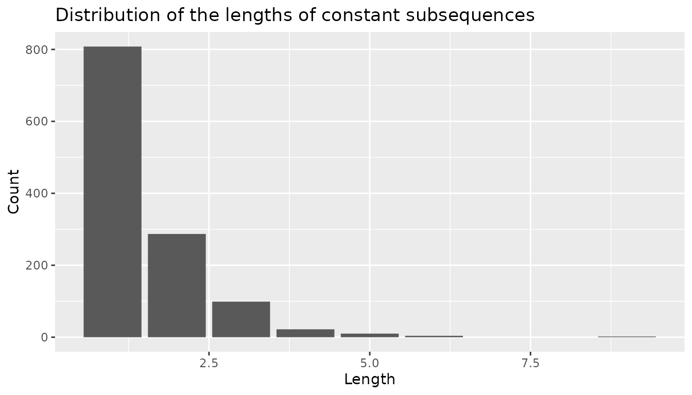
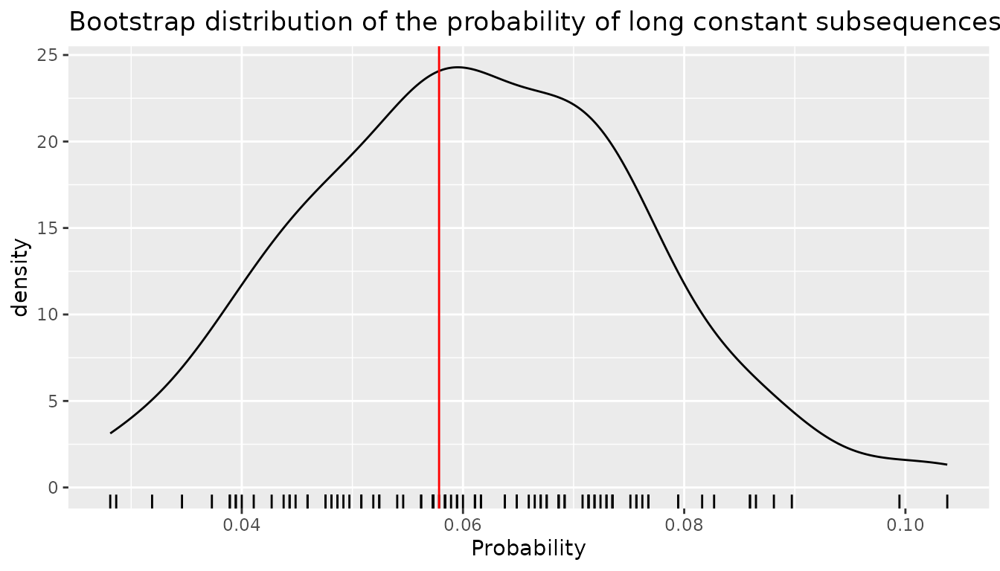
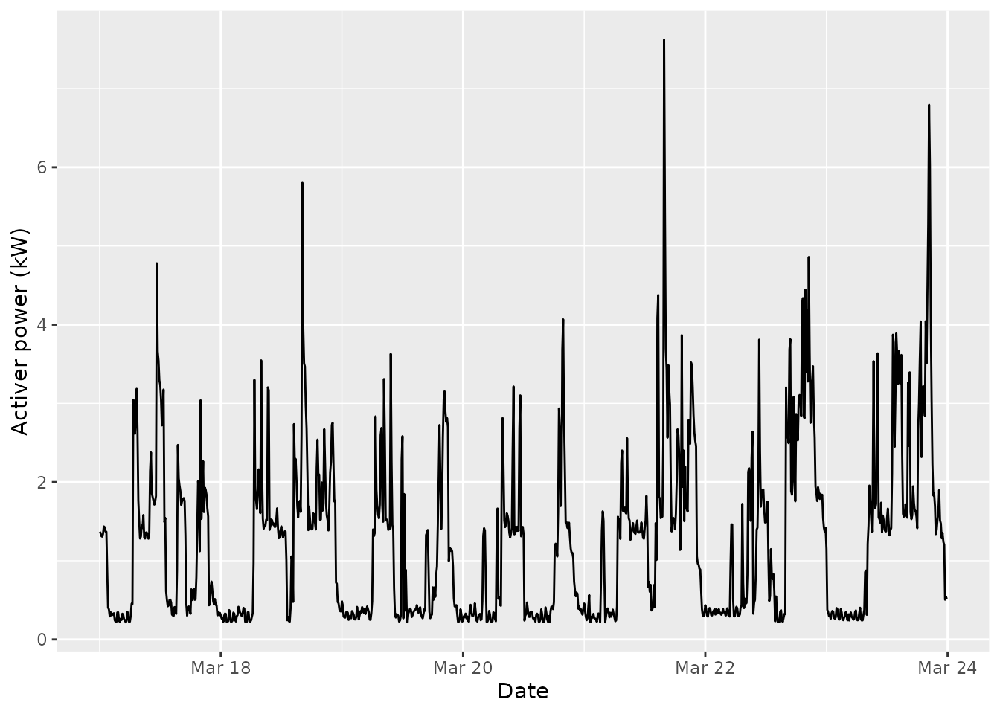

Once a (CO)VLMC has been estimated from a sequence, it can be used to produce new sequences. Any statistical estimator defined on the original sequence can be applied to the simulated sequences leading a form of semi-parametric bootstrap. This provides an interesting alternative to other bootstrapping solutions for correlated data, such as the block bootstrap. This can also be use to consider what-if scenarios when different values of the covariates are used study their effect beyond analysis coefficients in context specific models.
Theoretical results
Bühlmann and Wyner show in their paper that this approach is consistent for statistics that depend smoothly from arbitrary means of fixed mappings of contexts to numerical values. In simple terms, one can first choose a mapping of arbitrary tuples of values in the state space to numerical vectors and then build a estimator by averaging those vectors over the observed sequence. The resulting vector mean can then be transformed smoothly to lead to an estimator. The VLMC bootstrap is then consistent for this estimator under relatively mild hypothesis on the underlying VLMC.
A typical example of such estimator is the probability of observing a fixed pattern in the sequence. More generally, the class of estimators includes smooth transformations of the empirical distribution of patterns up to a fixed length.
In practice, it is recommended to sample a longer sequence than the one needed and to keep only the last \(n\) values, in order to minimise the influence of the starting values.
Sampling from a VLMC
Introduction
Let us consider a simple example with an independent sample:
dts <- sample(0:1, 500, replace = TRUE)The optimal VLMC according to the BIC has non memory:
Simulating a sequence using the model is done via the standard
stats::simulate() function as follows:
Even if this is useless here because of the independence, we drop the
first 100 samples. In general simulate.vlmc() is used as
stats::simulate() and supports the standard parameters:
-
nsimfor the number of simulated values, here the length of the new time series -
seedto specify the random seed used during the simulation (the initial state of the random number generator is restored to its previous after simulating the values)
In addition, one can specify the initial values of the sequence via
the init parameter, for instance:
is guaranteed to start with \(0, 0\):
dts_sample_2
#> [1] 0 0 0 0 0 1 1 0 1 0This provides an alternative to dropping the initial values of the simulated time series by setting those values to the one observed in the data set. Notice that this practice has no theoretical justification.
CAC time series
Let us consider the French CAC index provided in
EuStockMarkets:
CAC_raw <- as.data.frame(EuStockMarkets)$CACWe turn it into a discrete time series with three values:
- Stay if the value of the index on day t+1 is between 99.5% and 100.5% of the value on day t
- Up if the value increased by at least 0.5%
- Down if the value decreased by at least 0.5%
CAC_rel_evol <- diff(CAC_raw) / CAC_raw[-length(CAC_raw)]
CAC_dts <- factor(
ifelse(CAC_rel_evol >= 0.005, "Up",
ifelse(CAC_rel_evol <= -0.005, "Down", "Stay")
),
levels = c("Down", "Stay", "Up")
)Then we adjust a VLMC to the time series using the AIC criterion:
We use here the AIC to favour predictive performances and as a consequence the obtained model is quite complex with 30 contexts.
The original discrete time series does not exhibit long subsequences of constant values as shown in the following graphical representation.
CAC_rle <- rle(as.integer(CAC_dts))
CAC_rle_df <- data.frame(value = CAC_rle$values, length = CAC_rle$lengths)
ggplot(CAC_rle_df, aes(x = length)) +
geom_bar() +
labs(
title = "Distribution of the lengths of constant subsequences",
x = "Length",
y = "Count"
)
To study this aspect of the time series, a natural statistics is the probability of observing a constant subsequence of a length between 5 and 10 among all subsequences of length 10 that can be generated by the model. Notice that the patterns used in the statistics must be of fixed lengths to be covered by the consistency theorems mentioned above. We implement the statistics as follows:
long_sequence <- function(dts) {
dts_int <- as.integer(dts)
## RLE cannot be used directly as we need to account for overlapping
## patterns
dts_freq <- frollapply(dts_int, 10, \(x) max(rle(x)$length) >= 5)
mean(dts_freq, na.rm = TRUE)
}We generate 100 bootstrap samples, using a burning time proportional
to the depth of the model, in order to allow for a proper mixing to take
place. We use the seed parameter of
stats::simulate() to ensure reproducibility.
bootstrap_samples <- vector(100, mode = "list")
burning_time <- 50 * depth(CAC_model)
for (b in seq_along(bootstrap_samples)) {
bootstrap_samples[[b]] <- simulate(CAC_model,
burning_time + length(CAC_dts),
seed = b
)[-(1:burning_time)]
}Then we compute the statistics on the bootstrap samples.
bootstrap_ls <- sapply(bootstrap_samples, long_sequence)The bootstrap distribution of this statistics is illustrated on the following figure in which the red vertical line represents the value of the statistics on the original sequence.
ggplot(mapping = aes(x = bootstrap_ls)) +
geom_density() +
geom_rug() +
labs(
title = "Bootstrap distribution of the probability of long constant subsequences",
x = "Probability"
) +
geom_vline(xintercept = long_sequence(CAC_dts), color = "red")
Sampling from a COVLMC
The case of COVLMC is more complex mainly because of the dependence towards an external time series that is not modelled. In addition, no theoretical result justify a form of COVLMC bootstrap at the time of writing this document (2023).
We can nevertheless use sampling both to get an idea of the potential variability of the results from a qualitative point of view, and also to study some what-if scenarios based on a modification of the covariates.
CAC example continued
Let us study the CAC discrete time series using the three other
indexes from EuStockMarkets as covariates. As previously,
we select a model with the AIC criterion:
CAC_covariates <- as.data.frame(EuStockMarkets)[c("DAX", "SMI", "FTSE")][-1, ]
CAC_covlmc <- tune_covlmc(CAC_dts, CAC_covariates, criterion = "AIC")
CAC_comodel <- as_covlmc(CAC_covlmc)The obtained model is relatively complex as shown below:
draw(CAC_comodel, model = "full", with_state = TRUE)
#> *
#> +-- Down
#> | +-- Down (0.04097 [ (Down) | (I) DAX_1 SMI_1 FTSE_1 DAX_2 SMI_2 FTSE_2
#> | | Stay | -2.383 0.01467 -0.01714 -0.003948 -0.01314 0.01539 0.005337
#> | | Up | -1.939 0.02377 -0.02597 -0.0104 -0.02428 0.02526 0.01193 ])
#> | '-- Stay, Up (0.07236 [ (Down) | (I) DAX_1 SMI_1 FTSE_1
#> | Stay | -1.412 0.0004292 -0.001297 0.001371
#> | Up | 1.59 -0.000136 0.0004101 -0.0007633 ])
#> '-- Stay
#> | +-- Stay (0.0065 [ (Down) | (I) DAX_1 SMI_1 FTSE_1 DAX_2 SMI_2 FTSE_2
#> | | Stay | 0.871 0.007903 -0.009399 0.01673 -0.007771 0.009261 -0.01684
#> | | Up | 2.838 -0.005994 -0.01448 0.0299 0.003666 0.0169 -0.03126 ])
#> | '-- Down, Up (0.002452 [ (Down) | (I) DAX_1 SMI_1 FTSE_1
#> | Stay | -1.707 -0.001755 0.0004276 0.001412
#> | Up | -1.397 -0.001357 0.0006376 0.0008178 ])
#> '-- Up
#> +-- Up (0.01046 [ (Down) | (I) DAX_1 SMI_1 FTSE_1 DAX_2 SMI_2 FTSE_2
#> | Stay | -0.4838 0.02407 -0.02501 -0.008507 -0.02374 0.02474 0.0089
#> | Up | 2.484 0.005797 -0.01774 -0.009711 -0.006469 0.01917 0.008314 ])
#> '-- Down, Stay (0.7881 [ (Down) | (I)
#> Stay | 0.3225
#> Up | 0.1779 ])The variability of the discrete time series for fixed values of the
covariates can be investigated using simulated sequences. The only
difference between simulate.vlmc() and
simulate.covlmc() is the need for the covariates in the
latter. A burning time is also problematic here as we do not have
additional throw away values for the covariates. A possibility used here
consists in starting the discrete time series as the observed one
started, using as many values as the size of the largest context. Notice
that in the current implementation, simulating from a COVLMC is
relatively slow compared to simulation from a VLMC. Here we perform a
single simulation to illustrate the feature.
What-if scenarios
In some situations, one can modify the covariates to test the consequences of the external influence on the discrete time series under study. Let us consider for instance a week of electrical consumption:
pc_week <- powerconsumption[powerconsumption$week == 12, ]
elec <- pc_week$active_power
ggplot(pc_week, aes(x = date_time, y = active_power)) +
geom_line() +
xlab("Date") +
ylab("Activer power (kW)") We build a discrete version by considering two states: the background base active power below 0.4 kW and the active use of electric appliance above this limit.
elec_dts <- cut(elec, breaks = c(0, 1.2, 8), labels = c("background", "active"))
elec_cov <- data.frame(day = (pc_week$hour >= 7 & pc_week$hour <= 17))Then we adjust a COVLMC with a binary covariate day/night, using the AIC.
elec_covlmc_tune <- tune_covlmc(elec_dts, elec_cov, criterion = "AIC")
best_elec_covlmc <- as_covlmc(elec_covlmc_tune)
draw(best_elec_covlmc, model = "full", time_sep = " | ", p_value = FALSE)
#> *
#> +-- background
#> | +-- background ([ (I) | day_1TRUE
#> | | -3.383 | 0.8979 ])
#> | '-- active ([ (I)
#> | -1.526 ])
#> '-- active
#> +-- background ([ (I) | day_1TRUE
#> | 20.57 | -19.36 ])
#> '-- active
#> +-- background ([ (I)
#> | 1.609 ])
#> '-- active ([ (I) | day_1TRUE
#> 2.552 | 0.8602 ])Then we can simulate longer or shorter days by manipulating the covariates. For instance a “day only” full week could be obtained as follows
day_only <- simulate(best_elec_covlmc,
length(elec_dts),
seed = 0,
covariate = data.frame(day = rep(TRUE, length(elec_dts)))
)while a “night only” full week is given by
night_only <- simulate(best_elec_covlmc,
length(elec_dts),
seed = 0,
covariate = data.frame(day = rep(FALSE, length(elec_dts)))
)A typical use of this approach consists in simulating first a collection of sequences with the original covariates to get a sense of the variability of the statistics of interest. In a second phase, a comparable collection of sequences is generated using the manipulated covariates.